Excel Foundations: Formulas, Functions, References, and Charts
Opening scenario
Maria is an analyst at a community clinic. The practice manager asks her for a standing summary of the appointment records: how many appointments the clinic scheduled, the share that ended as no-shows, and whether any day of the week carries a heavier no-show burden than the others. The file Maria works from holds two years of appointments. She could read it, tally the categories by eye, and type the totals into a slide, but that approach has two weaknesses. The counts have to be recomputed by hand whenever the data changes, and a reader has no way to confirm where each number came from.
A spreadsheet solves both problems. In this chapter you build the summary as a set of formulas that read directly from the appointment file. Every figure traces back to the data, and when the data in the Appointments Table are updated, every figure recalculates. Chapter 3 introduced the Excel workbench and its core tools. This chapter puts those tools to work and produces a reusable scorecard, a single formatted page that reports the measures the clinic watches. The techniques here are used in every chapter that follows, so this is where they are established.
By the end of this chapter, you will be able to:
- Navigate a worksheet and select cells, columns, and the entire sheet.
- Write formulas and control how they copy with relative, absolute, and mixed references.
- Apply the core calculation functions:
SUM,ROWS,COUNTIFS,SUMIFS,AVERAGE,AVERAGEIFS, andIF. - Summarize a column with the descriptive-statistic functions
MEDIAN,STDEV.S,MIN, andMAX. - Organize data by sorting and filtering, and choose a chart that answers a comparison question.
- Build and format a one-page scorecard that recalculates itself when the data changes.
Key concepts
A spreadsheet records not only a result but the calculation that produced it, which is what makes a worksheet auditable: a reviewer can open any cell and read the formula behind the number. This section builds the groundwork for writing formulas that stay correct as the data changes, in three parts:
- references that control how a formula copies from cell to cell,
- functions that count, add, and summarize a column,
- sorting, filtering, and charts that organize the rows and display the result.
The walkthrough and practice sections then apply these techniques to real appointment and emergency-department files.
Writing formulas
A formula is a cell entry that begins with an equals
sign and computes a result from other cells, such as =B2+C2
or =D2/D3.
The purpose of a formula is to reference cells rather than fixed numbers. When a referenced cell changes, every formula that depends on it updates automatically. A few rules cover most situations:
- Begin every formula with
=. - Use
+,-,*, and/for arithmetic. - Parentheses set the order of operations:
=(C2+D2)/E2adds before it divides. - The formula bar displays the formula; the cell displays its result.
Enter =B2/C2, not =413/2560. A formula that
references cells recalculates when the data changes, while a value typed
in by hand becomes outdated as soon as the data is updated and leaves no
record of how it was computed.
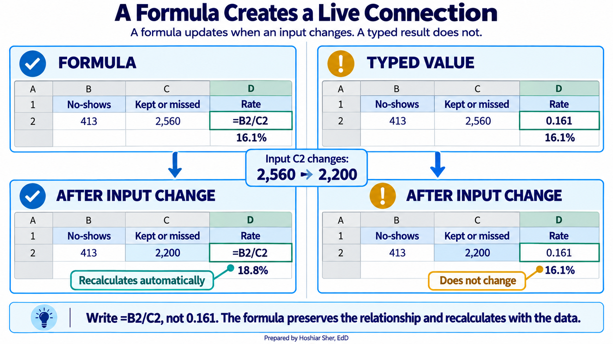
Controlling how formulas copy: relative, absolute, and mixed references
When you copy a formula from one cell to another, Excel adjusts its cell references to match the new position. That adjustment is usually what you want, but not always, and the difference between the reference types is a common source of errors that produce no warning.
Excel offers three reference types. The dollar sign is the lock: it freezes whatever part of the address follows it.
- A relative reference (
B2) shifts in both directions when the formula is copied. This is the default and the usual choice. - An absolute reference (
$B$2) is locked on both the column and the row, so it always points at the same cell no matter where it is copied. - A mixed reference (
B$2or$B2) locks only one part:B$2fixes the row, and$B2fixes the column.
Figure 3 shows what each reference type becomes when a formula
entered in cell B2 is filled down to the next row and
filled right to the next column. Filling in only one direction can hide
the difference, so the figure fills in both.
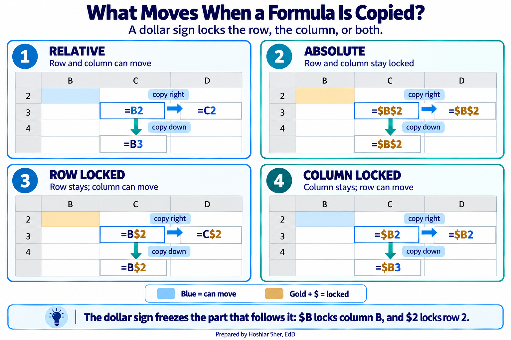
A short rule covers each type:
- Use a relative reference when each copy of a formula should point at a new row (or column), which is the common case.
- Use an absolute reference when every copy must
point at the same cell. A typical use case is a shared denominator or
target: when you divide each clinic’s no-show count by one grand total
in
$B$20, locking that cell keeps every row dividing by the same value as the formula is filled down. - Use a mixed reference when a formula is copied
across a grid and one direction must stay fixed. For example, when a
table of rates is divided by a single column of patient counts in column
B, writing$B2fixes the column while the row moves, so each rate pairs with the correct patient count.
When a column of results looks wrong below the first row, check the
reference type first. A denominator that should have been locked as
$B$20 but was left relative as B20 slides to
B21, B22, and so on, dividing by the wrong
cell each time and producing values that look plausible but are
incorrect. A pair of dollar signs prevents it.
Enter =A1 in cell C3, then copy it to
D3 and to C4. Note how both parts of the
address move. Now change it to =$A$1 and copy it to the
same two cells. Predict what each copy will show before you look, then
confirm that every copy still reads =$A$1.
Core calculation functions
A function is a named calculation that takes its
inputs in parentheses, such as =AVERAGE(B2:B100).
A small set of functions covers most calculations in daily analytic work. The examples below use short cell ranges for clarity; in the walkthrough you will refer to Table columns by name instead.
| Function | What it calculates | Example |
|---|---|---|
SUM |
Adds the numbers in a range | =SUM(B2:B100) |
ROWS |
Counts the rows in a range or Table | =ROWS(B2:B100) |
COUNTIFS |
Counts rows meeting one or more conditions | =COUNTIFS(C2:C100, "No Show") |
SUMIFS |
Adds a column for rows meeting conditions | =SUMIFS(B2:B100, C2:C100, "Completed") |
AVERAGE |
Returns the mean of a range | =AVERAGE(D2:D100) |
AVERAGEIFS |
Returns the mean for rows meeting conditions | =AVERAGEIFS(B2:B100, C2:C100, "Completed") |
IF |
Returns one value when a test is true, another when it is false | =IF(B7>B8, "Above", "At or below") |
ROUND |
Rounds a number to a set number of decimals | =ROUND(B2/B3, 3) |
Counting with a condition is the most frequently used operation in healthcare analytics, because nearly every measure is a count over a defined group. The no-show rate from Chapter 3 is exactly this: count the no-shows, count the completed-or-no-show appointments, and divide the first by the second.
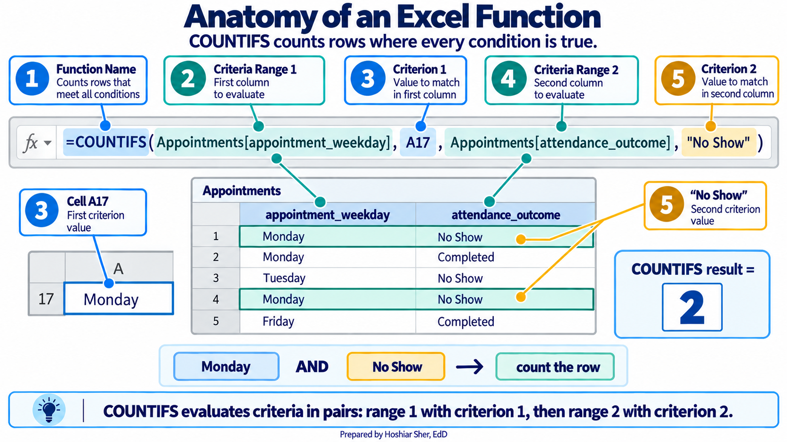
ROUND changes the stored value of a number, which
affects any later calculation that uses it. When you only want to change
how a number is displayed, use number formatting instead (covered in the
walkthrough), which leaves the underlying value intact. Reserve
ROUND for cases where the rounded value itself must be
stored and reused.
COUNTIFS over a defined group is the basis of most
healthcare measures. Once you are fluent with it, rates, counts, and
category breakdowns all become the same operation with different
conditions.
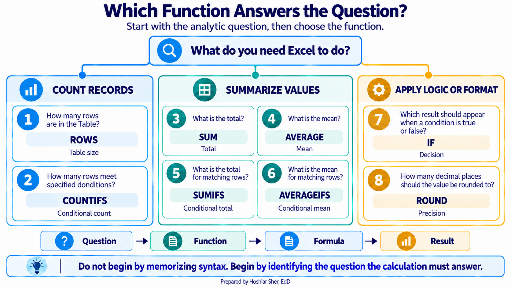
Summarizing a column with descriptive statistics
The same mechanics that count and add also compute the summary numbers that describe a single column of values. Chapters 9 and 10 cover how to choose among these summaries and interpret them; the functions themselves are listed here so you can produce them.
| Function | Returns |
|---|---|
AVERAGE |
The mean, the arithmetic center of the values |
MEDIAN |
The middle value, which is less affected by extremes |
STDEV.S |
The standard deviation, a measure of spread |
MIN, MAX |
The smallest and largest values |
These functions ignore blank cells. AVERAGE,
MEDIAN, MIN, MAX, and
STDEV.S compute their result only from the cells that
actually contain a number, so a column with missing values is summarized
over the recorded values alone. That behavior is usually convenient, but
it means a reported average describes only the records that have data, a
point the walkthrough returns to.
Excel offers two standard-deviation functions, and they answer different questions:
- Use
STDEV.Swhen the data at hand are treated as a sample drawn from a larger population, which is the common situation in analytics. - Use
STDEV.Pwhen the file contains the entire population you want to describe.
This chapter treats its datasets as samples of ongoing clinic
activity, so it uses STDEV.S throughout.
Organizing data: sorting and filtering
Before a column can be summarized or charted, it often helps to reorder or narrow the rows. Two commands handle this, and both operate on the data itself rather than on a separate copy.
- Sorting rearranges the rows by the values in a chosen column, placing them in ascending or descending order. It changes the physical order of the rows, not only what you see. Open it from Data > Sort, choose the column to sort by, and set the direction.
- Filtering hides the rows that do not meet a condition, leaving the matching rows visible while the hidden rows remain in the file. When data is formatted as a Table, each column header carries a small arrow; clicking it opens a menu where you check the values to keep. Clearing the filter restores every row.
Sorting is useful when you want to see the largest or smallest values at the top, such as the specialties with the highest no-show rates. Filtering is useful when you want to work with one subset at a time, such as completed visits only. Neither command deletes a row, so both are safe to apply and undo while you explore the data.
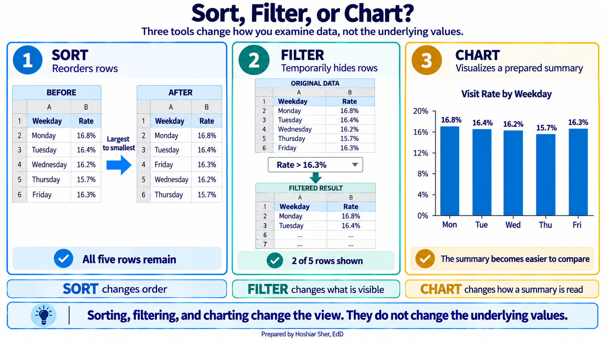
Visualizing results with charts
A chart converts a small summary into a picture, so a reader sees a comparison or a trend at a glance instead of scanning a column of numbers. Charts are central to how analysts communicate findings, and Chapter 11 develops data visualization in depth. For now, one principle is enough: the chart type follows the question being asked.
- A column or bar chart compares one value across categories, such as the no-show rate for each weekday.
- A line chart tracks a value over time, such as monthly volume across a year.
- A histogram shows how the values of a single variable are distributed, such as the spread of patient ages.
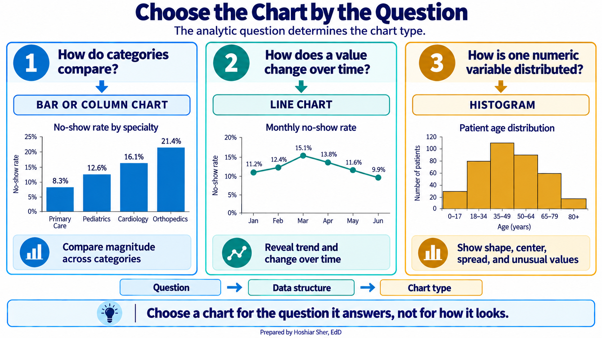
To build a chart in Excel, select the labels and the values you want to plot, then choose a chart type from the Insert > Charts group. Excel draws the chart on the sheet, where you can add a title and adjust the axes. Because the chart reads from the cells you selected, it updates automatically when those cells recalculate.
Figure 8 is a column chart of the no-show rate for each day of the week, the kind you assemble from a short summary in a few steps. The weekdays from Monday through Friday cluster closely, between about 15.7 and 16.8 percent, while Saturday and Sunday fall well below them, near 8 and 11 percent. The weekend rates rest on far fewer appointments, however, so the apparent difference should be read with that smaller volume in mind.
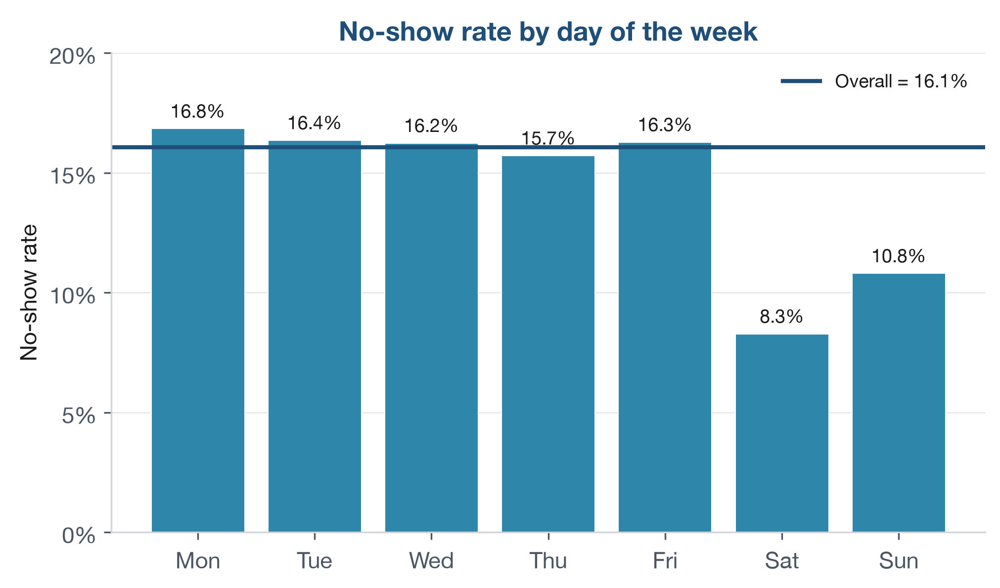
The column, line, and histogram cover the questions this chapter asks, but they are only part of a wider toolkit. Other chart families answer other questions: some show how a whole divides into parts or how values are distributed (Figure 9), and others show how two variables relate or how categories nest inside one another (Figure 10). You do not need these yet. Chapter 11 returns to data visualization in depth and explains when each one is the right choice; for now, treat the two figures below as a preview of what is ahead.
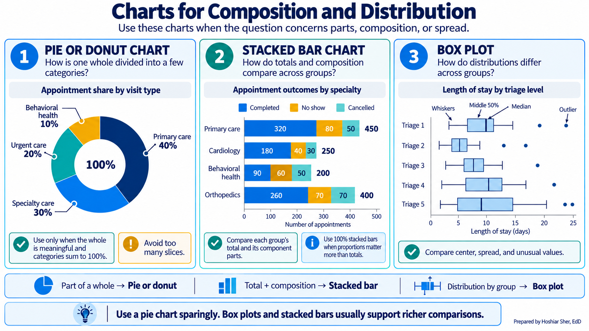
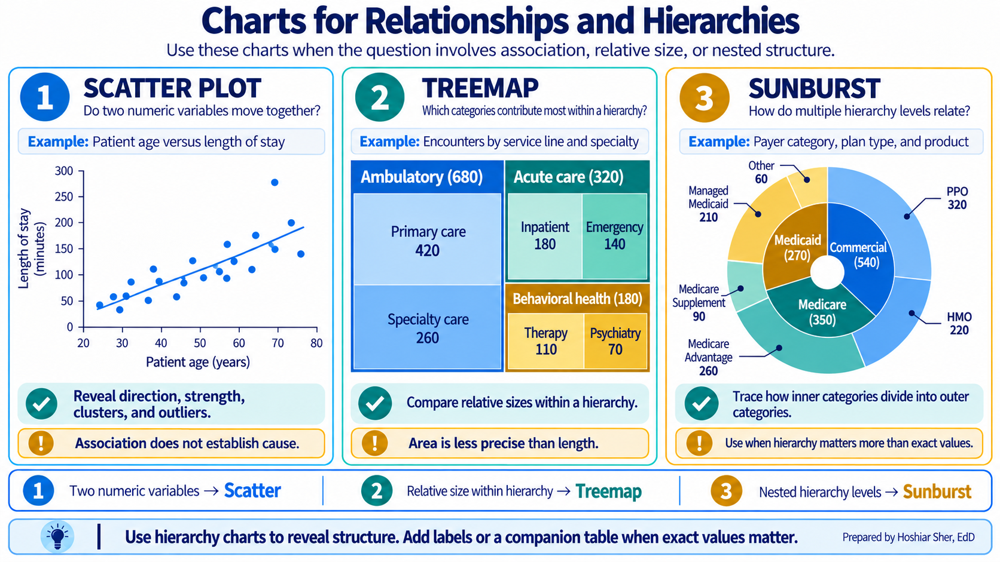
Recognizing and handling error values
When a formula cannot return a valid result, Excel displays an error value in place of a number. Learning to read these values is part of building reliable worksheets, because each one points to a specific, common cause. The most frequent are:
#DIV/0!divides by zero or by an empty cell, often a denominator that has not yet been filled in.#N/Ameans a lookup found no matching value.#VALUE!means a formula received text where it expected a number.#REF!means a referenced cell was deleted, so the formula no longer has a valid target.#NAME?means Excel did not recognize a name in the formula, usually a misspelled function (=AVERGE(...)) or a function that an older version of Excel does not include.
When a formula may fail for a reason you expect and understand, you
can replace the error with a readable message. The IFERROR
function does this: =IFERROR(B2/C2, "no data") returns the
division when it succeeds and the text when it would otherwise produce
an error.
Use IFERROR only when you know which failure you are
catching. Because it replaces every error with the same
message, it can also conceal a genuine mistake, such as a misspelled
column name, that you would rather see and fix. When the only problem
you expect is an empty denominator, a more specific formula makes the
intent clear: =IF(C2=0, "no data", B2/C2) handles the zero
case without hiding unrelated errors.
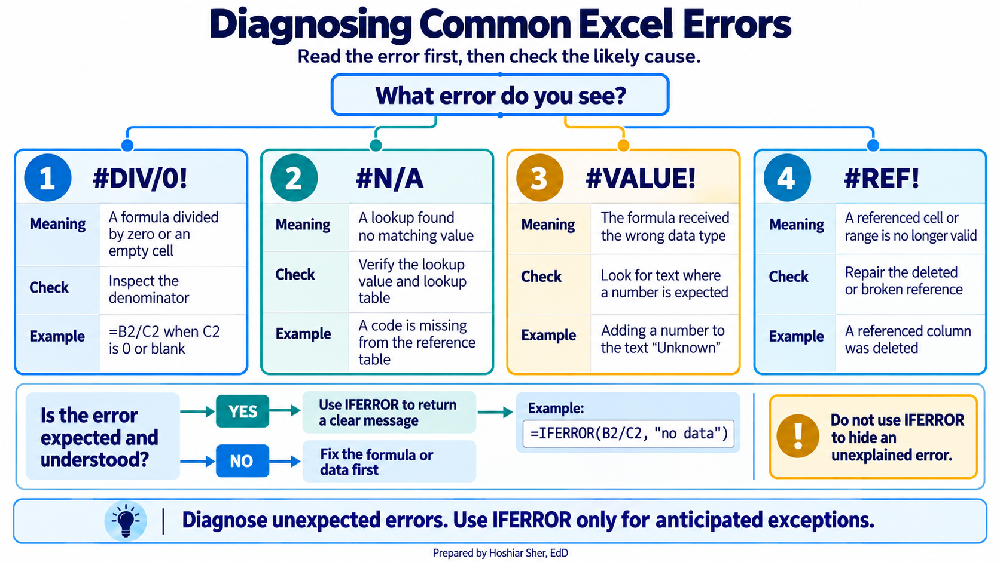
Walkthrough: build a clinic no-show scorecard
This build turns the raw appointment file into the one-page scorecard in Figure 13. Figure 12 previews the path from raw rows to that finished page. Every number on it is computed by a formula that reads from the data, so no calculated result is typed by hand.
The scorecard reports the no-show rate, so it is worth stating the measure precisely before building it. The rate counts no-shows and divides by the appointments that were either completed or recorded as a no-show. Early cancellations, late cancellations, and rescheduled appointments are excluded from the denominator, because a canceled visit is a different event from a patient who simply did not arrive. The 14 percent target used below is an illustrative teaching value, not a published standard; a real scorecard would use a target set by the organization. The scorecard summarizes the entire appointment file, which spans two years and 36,000 appointments; to report a single month instead, you would first filter the Table to that month.
A scorecard is a one-page summary of the few numbers that matter most, each shown next to a target or a comparison so a reader can judge performance at a glance. The headline numbers on it are its key performance indicators (KPIs).
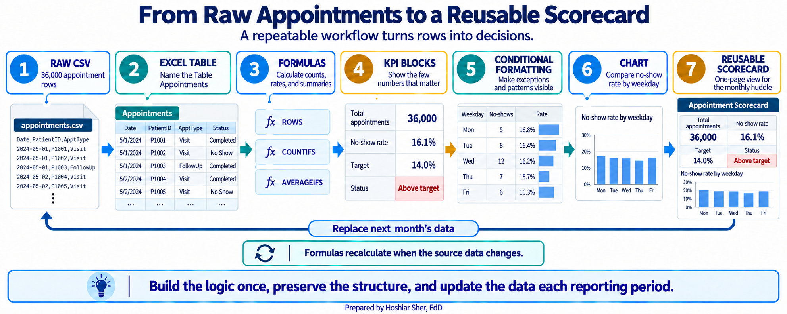
Before you start: open
datasets/DS2_appointments_clean.csv, and immediately save a
working copy as an Excel workbook so the original stays untouched. Work
only in the copy.
Part A. Set up the data. First convert the raw file into a named Table so that every later formula can refer to its columns by name.
- Open
datasets/DS2_appointments_clean.csvin Excel. - Choose File > Save As, pick Excel
Workbook (.xlsx), and name it
ch06_scorecard.xlsx. Work in this file from here on. - Click any cell inside the data. On the Insert tab, click Table. Excel outlines the whole data range; confirm My table has headers is checked, and click OK. The data becomes a banded Table.
- On the Table Design tab (named
Table on macOS), click in the Table
Name box, type
Appointments, and press Enter. - Add a new worksheet with the + beside the sheet
tabs, then double-click the new tab, type
Scorecard, and press Enter.
Part B. Title the scorecard. A clear title and a little formatting turn a grid of numbers into something a manager will read.
- On the
Scorecardsheet, clickA1, typeClinic No-Show Scorecard, and press Enter. - Select
A1:F1, then choose Home > Alignment > Merge & Center. The title spans the full width. (On a data sheet, never merge cells, because merged cells break sorting and formulas; here the Scorecard is an output sheet, so it is safe. If you prefer to avoid merging entirely, Center Across Selection in the alignment options gives the same look without combining cells.) - With the merged cell selected, apply Bold and size 14, set Home > Font > Fill Color to a dark blue, and set Font Color to white.
Part C. Build the KPI block. The KPI block holds the
headline numbers the clinic watches every month. Each one is a single
formula over the Appointments Table.
- In
A3typeMetricand inB3typeValue. SelectA3:B3and click Bold. - In
A4typeTotal appointments; inB4enter=ROWS(Appointments). CellB4shows36000. - In
A5typeNo-shows; inB5enter=COUNTIFS(Appointments[attendance_outcome], "No Show"). CellB5shows4913. - In
A6typeCompleted or no-show; inB6enter
=COUNTIFS(Appointments[attendance_outcome], "Completed") + B5
CellB6shows30571. This is the denominator of the no-show rate. - In
A7typeNo-show rate; inB7enter=B5/B6. For now it shows0.161; you will format it as a percentage later. - In
A8typeTarget; inB8type0.14. - In
A9typeStatus; inB9enter=IF(B7>B8, "Above target", "At or below target"). CellB9showsAbove target. - In
A10typeTelehealth visits; inB10enter=COUNTIFS(Appointments[telehealth_flag], 1). CellB10shows5199. - In
A11typeTelehealth share (of all appointments); inB11enter=B10/B4. It shows0.144. The denominator is every appointment, including the ones that were canceled or rescheduled. - In
A12typeRecorded copay, completed; inB12enter
=SUMIFS(Appointments[copay_usd], Appointments[attendance_outcome], "Completed")
It shows447047.58.SUMIFSadds the copay only for completed visits and skips the blank copay cells. - In
A13typeAvg recorded copay, completed; inB13enter
=AVERAGEIFS(Appointments[copay_usd], Appointments[attendance_outcome], "Completed")
It shows about28.51. Because the function ignores blanks, this is the average among completed visits that have a recorded copay.
Part D. Add an age distribution. A few one-line statistics describe the ages recorded across the appointments. These are the summary functions from the concepts section.
- In
D3typeStatisticand inE3typeYears. SelectD3:E3and click Bold. - In
D4typeMean; inE4enter=AVERAGE(Appointments[patient_age]). It shows about52.7. - In
D5typeMedian; inE5enter=MEDIAN(Appointments[patient_age]). It shows53. - In
D6typeStd dev; inE6enter=STDEV.S(Appointments[patient_age]). It shows about20.9. - In
D7typeYoungest; inE7enter=MIN(Appointments[patient_age]). It shows0. - In
D8typeOldest; inE8enter=MAX(Appointments[patient_age]). It shows90. - In
D9typeRange; inE9enter=E8-E7. It shows90.
These statistics describe age across appointments, not across patients. A patient with several appointments contributes a value each time, so frequent visitors count more than once. The result is therefore the age profile of the clinic’s visits, not of its distinct patients. Chapter 4 explains why the unit of analysis matters; to describe the patients themselves, you would first reduce the file to one row per patient.
Part E. Build the day-of-week breakdown. This block
asks whether any day runs higher than the clinic as a whole. It is the
same COUNTIFS operation with an added condition, plus one
absolute reference that locks the clinic-wide rate.
- In
A16:E16type the headersDay,No-shows,Completed or no-show,Rate, andvs Clinic. SelectA16:E16and click Bold. - In
A17:A23typeMonday,Tuesday,Wednesday,Thursday,Friday,Saturday, andSunday, one per row. - In
B17enter
=COUNTIFS(Appointments[appointment_weekday], A17,
Appointments[attendance_outcome], "No Show")
CellB17shows992. - In
C17enter
=COUNTIFS(Appointments[appointment_weekday], A17,
Appointments[attendance_outcome], "Completed") + B17
CellC17shows5890. - In
D17enter=B17/C17. It shows about0.168. - In
E17enter=D17-$B$7. The$B$7locks the clinic-wide no-show rate so every row compares to the same 16.1 percent. It shows about0.007. - Select
B17:E17. Point at the small square at the bottom-right corner of the selection, the fill handle, and drag it down to row 23. The formulas copy, shifting their row references but keeping$B$7fixed. Saturday’s rate (D22) shows about0.083, far below the weekdays, though it rests on only about 500 appointments.
Part F. Highlight with conditional formatting. Conditional formatting shades a cell based on its value, so a reader sees the pattern without reading every number.
- Select
D17:D23. Choose Home > Conditional Formatting > Data Bars and pick a blue fill. A bar now fills each rate cell in proportion to its value. - Select
B9. Choose Home > Conditional Formatting > Highlight Cells Rules > Text that Contains, typeAbove target, and pick a red fill. The status cell turns red when the clinic is above target.
Part G. Add the chart. A column chart makes the day-of-week comparison instant.
- Select
A17:A23, then holdCtrl(Cmdon macOS) and also selectD17:D23. Choose Insert > Charts > Clustered Column. Click the chart title and typeNo-show rate by day.
Part H. Format and finish. A last pass makes the numbers readable and the sheet printable.
- Select
B4:B6, then holdCtrl(Cmdon macOS) and also selectB10. Apply Home > Number > Comma Style and click Decrease Decimal until no decimals show. The counts read36,000,4,913,30,571, and5,199. - Select
B7, then addB8andB11to the selection. Apply Home > Number > Percent Style and Increase Decimal once. They read16.1%,14.0%, and14.4%. - Select
B12, apply Home > Number > Accounting Number Format, then click Decrease Decimal twice so no cents show: it reads$447,048(the stored value is still447047.58). SelectB13, apply Accounting Number Format: it reads$28.51. - Select
D17:E23, apply Percent Style and one decimal. Monday’s rate reads16.8%and its gap reads0.7%. Because thevs Cliniccolumn subtracts one rate from another, that0.7%is 0.7 percentage points above the clinic-wide rate, not 0.7 percent of it. - Select
A3:B13, apply Home > Font > Borders > All Borders. Do the same forD3:E9andA16:E23. - Select each header row (
A3:B3,D3:E3,A16:E16), apply Bold, and set a light Fill Color so the headers stand out. - Click the Select All button, then choose Home > Format > AutoFit Column Width so nothing is cut off.
- Set the print layout: choose Page Layout > Orientation
> Landscape, and in Page Layout > Scale to
Fit set Width to 1 page so
the whole scorecard fits across the sheet. Select
A1:H23and choose Page Layout > Print Area > Set Print Area. - Open File > Print to preview. Confirm that the KPI block, the age block, and the day-of-week block with its chart all appear together on a single page and that the chart is not split; nudge the chart if it overlaps a block.
- Save with Ctrl+S (Cmd+S on macOS). Your sheet should resemble Figure 13.
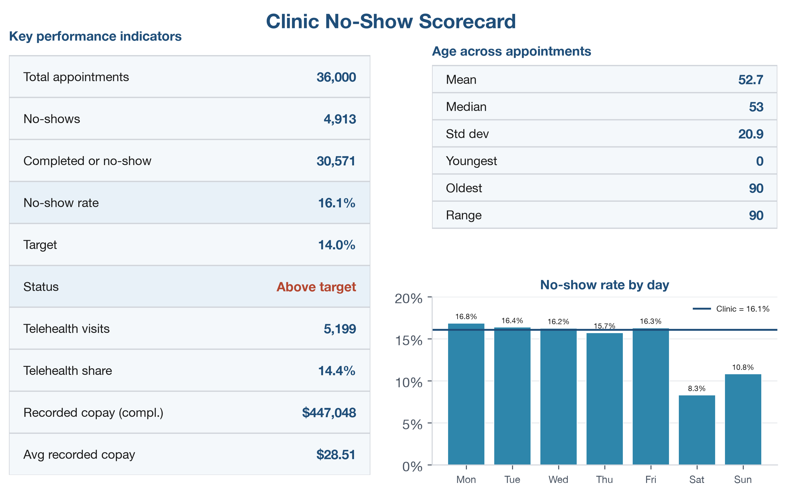
Every number on the sheet traces back to the Table, and no calculated result was typed by hand. When the data in the Appointments Table are updated, the whole scorecard recalculates.
Practice on your own
These two exercises reuse the walkthrough’s techniques on new questions. The first is fully guided, like the walkthrough, so you have a second worked example to lean on. The second fades the support: it names the function and the cells and gives you a value to check against, but leaves you to assemble each formula yourself, which is the real skill. Try each block before checking the answer key.
Practice A: an emergency-department summary
Build a summary for the emergency department from a different file, so you see that the same techniques work on another similarly structured dataset.
Goal: a one-page summary that reports total visits, length-of-stay (LOS) statistics, the share of visits where the patient left without being seen, and average LOS by triage acuity, with a chart.
- Open
datasets/DS3_ed_throughput_clean.csv, then choose File > Save As and save a copy asch06_ed_summary.xlsx. - Click any cell inside the data. On the Insert tab, click Table, confirm My table has headers, and click OK.
- On the Table Design tab, set the Table
Name to
ED. - Add a worksheet and rename it
Summary. - In
A1typeED Throughput Summary. SelectA1:D1, choose Merge & Center, then make it Bold, size 14, with a dark fill and white font. - In
A3typeMetricand inB3typeValue; selectA3:B3and click Bold. - In
A4typeTotal visits; inB4enter=ROWS(ED). It shows18000. - In
A5typeMean LOS (min); inB5enter=AVERAGE(ED[length_of_stay_minutes]). It shows about210. The 584 visits with no recorded LOS are skipped by the function. - In
A6typeMedian LOS; inB6enter=MEDIAN(ED[length_of_stay_minutes]). It shows190. - In
A7typeLOS std dev; inB7enter=STDEV.S(ED[length_of_stay_minutes]). It shows about90. - In
A8typeShortest stay; inB8enter=MIN(ED[length_of_stay_minutes]). It shows74. - In
A9typeLongest stay; inB9enter=MAX(ED[length_of_stay_minutes]). It shows1225. - In
A10typeLeft without being seen; inB10enter
=COUNTIFS(ED[left_without_being_seen_flag], 1)
It shows584. - In
A11typeLeft-without-seen share; inB11enter=B10/B4, then format it as a percentage with one decimal. It shows about3.2%. - In
A13typeTriage leveland inB13typeAvg LOS (min); makeA13:B13Bold. - In
A14:A18type1,2,3,4, and5. - In
B14enter=AVERAGEIFS(ED[length_of_stay_minutes], ED[triage_acuity], A14), then drag the fill handle down toB18. Level1shows about265and level5about200. - Select
B14:B18and apply Home > Conditional Formatting > Data Bars. - Select
A14:A18, holdCtrl(Cmdon macOS), also selectB14:B18, and choose Insert > Charts > Clustered Column. Title itAverage LOS by triage acuity. - Apply All Borders to your blocks, click the Select All button, choose AutoFit Column Width, and save.
Practice B: no-show rate by specialty
Return to ch06_scorecard.xlsx and break the no-show rate
down a different way, comparing each specialty to the clinic as a whole.
This exercise names the function and the cells but leaves the formula
for you to build.
Goal: a sorted table and chart of the no-show rate for each specialty, each compared with the clinic-wide rate using a locked reference.
- Add a new worksheet and rename it
Specialty. - In
A1typeNo-Show Rate by Specialty, then merge and center it acrossA1:E1and format it bold, size 14, with a dark fill and white font, as in the walkthrough. - In
G1typeClinic overall. InH1, reference the cell on theScorecardsheet that holds the clinic-wide no-show rate (=Scorecard!B7), and formatH1as a percentage with one decimal. It shows16.1%; this is the value every specialty is measured against. - In
A3:E3type the headersSpecialty,No-shows,Completed or no-show,Rate, andvs Clinic, and bold the row. InA4:A11, list the eight specialties:Primary care,Urgent care,Behavioral health,Cardiology,Orthopedics,OB/GYN,Endocrinology, andPulmonology. - In
B4, use=COUNTIFS(...)over theAppointmentscolumns to count the no-shows for the specialty inA4.COUNTIFStakes a column, then the condition it must meet, and you can give it more than one pair: here the specialty column must matchA4, and the outcome column must match"No Show".- Keep
A4relative (no dollar signs) so each row counts its own specialty when you copy down.
- In
C4, build a matching=COUNTIFS(...)for the same specialty with the outcome"Completed", then add the no-show count (+ B4) so the cell holds the completed-or-no-show denominator. - In
D4, compute the rate by dividing the no-shows by the denominator (=B4/C4). - In
E4, subtract the clinic-wide rate from this specialty’s rate. Lock the clinic cell with an absolute reference ($H$1) so every row compares against the same number, and leaveD4relative. - Select
B4:E4and drag the fill handle down to row 11. Because$H$1is locked and the other references are relative, each specialty computes its own counts, rate, and gap. - Select
D4:D11andE4:E11and format them as percentages with one decimal. - Select any cell in
A3:E11and sort byRatefrom largest to smallest (Data > Sort). Then add data bars toD4:D11(Home > Conditional Formatting > Data Bars). - Make a Clustered Bar chart of the specialties
against their rates: select
A4:A11, holdCtrl(Cmdon macOS), also selectD4:D11, choose Insert > Charts > Clustered Bar, and title itNo-show rate by specialty. - Apply All Borders, AutoFit Column
Width, and save.
- Check your work:
Behavioral healthshould top the list at about18.5%andUrgent caresit lowest at about11.2%;Primary care(about16.4%) lands just above the clinic-wide16.1%. If every specialty shows the same gap in columnE, the clinic cell was not locked, so check for$H$1.
- Check your work:
Going deeper
As a summary grows past a handful of cells, a formula-by-formula
sheet becomes hard to maintain, and a PivotTable does the same counting
with less to break. The signal to switch is repetition: if you are
writing the same COUNTIFS for Monday, Tuesday, Wednesday,
and on down the week, you are rebuilding a PivotTable by hand. Chapter 3
introduced the PivotTable as one of the four core tools, and the rest of
the book relies on it heavily. Formulas and PivotTables are
complementary rather than competing. Formulas suit a few targeted
numbers, and PivotTables suit summarizing a column across many groups at
once.
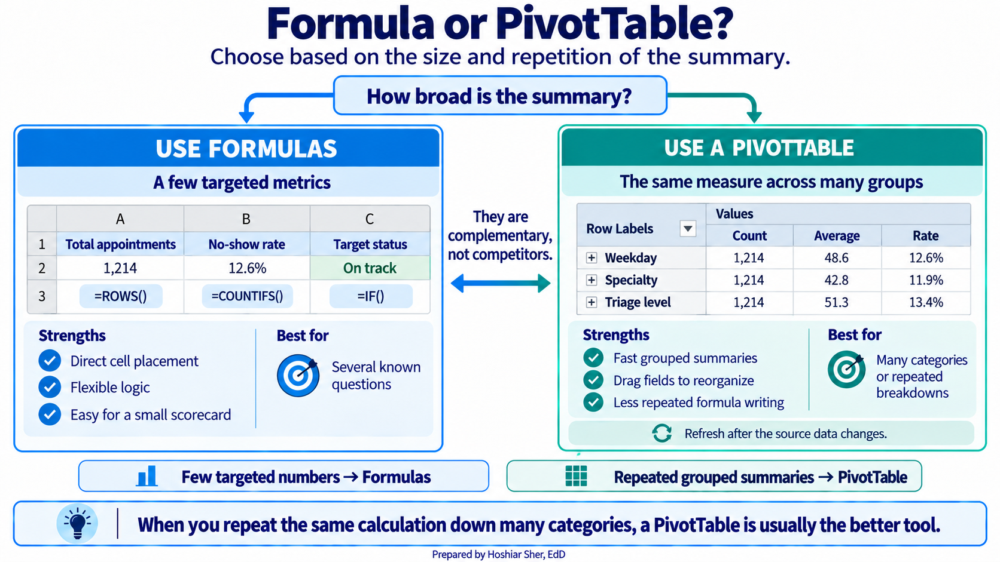
Real-world spotlight
The following is an illustrative scenario, not a specific
organization. An analyst built a clinic scorecard that divided each
clinic’s no-show count by the total across all clinics, using a formula
like =B2/B20. It looked correct at the top of the column
and drifted into implausible values below, because the denominator
B20 was never locked and slid down one row with each copy.
Half the scorecard was wrong, and the error went unnoticed until a
clinic questioned its number. A single pair of dollar signs,
=B2/$B$20, would have prevented it. The lesson is small and
durable: when a formula must always point at the same cell, lock it, and
when a column of results looks off, check the reference type first.
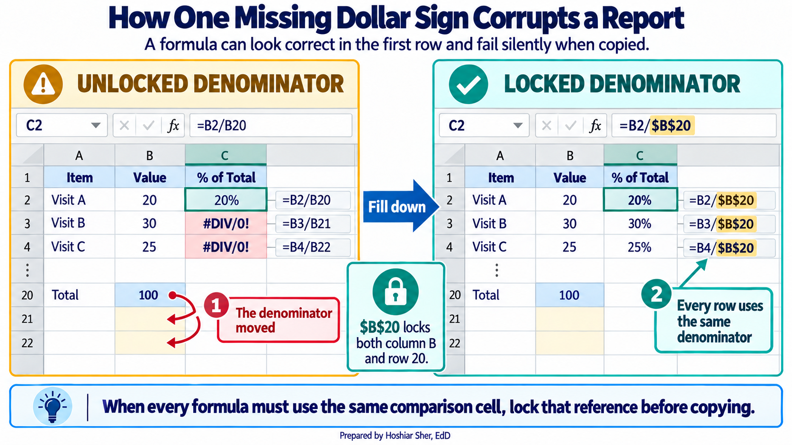
- The Select All button, clicking, and dragging select cells; the Insert tab turns a range into a named Table.
- A formula references cells, so the sheet recalculates itself when the data changes.
- A relative reference shifts when copied, an absolute reference is locked with dollar signs, and a mixed reference locks only the row or the column.
SUM,ROWS,COUNTIFS,SUMIFS,AVERAGE,AVERAGEIFS, andIFcover most calculations;COUNTIFSover a defined group is the basis of most healthcare measures.MEDIAN,STDEV.S,MIN, andMAXsummarize a column and ignore blank cells; sorting, filtering, and a well-chosen chart turn those numbers into a scorecard a reader will use.
- Explain the difference between
B2,$B$2, andB$2, and give a situation where each is the right choice. - Write a formula that counts the appointments where
telehealth_flagis1andattendance_outcomeis"No Show". - Using the
AppointmentsTable, write the formulas for the mean, median, and standard deviation ofpatient_age. - A formula
=B2/B20is filled down a column and the results are wrong below the first row. State the most likely cause and the fix. - You must show the no-show rate for each day of the week. Name the chart type you would use and one reason it fits the question.
- A copay column contains many blank cells. Explain what
=AVERAGE(Appointments[copay_usd])computes over such a column, and why the result does not describe every appointment.
Practice A (ED summary): the Table holds 18000 visits;
the mean recorded length of stay is about 210 minutes, the
median is 190, and the standard deviation is about
90, so the mean sits above the median and the distribution
is right-skewed. The shortest stay is 74 minutes and the
longest is 1225; in 584 visits, about
3.2% of all visits, the patient left without being seen,
and those are the visits with no recorded LOS. Average length of stay
rises with acuity, from about 200 minutes at triage level 5
to about 265 at level 1.
Practice B (specialty): Behavioral health has the
highest no-show rate at about 18.5% and
Urgent care the lowest at about 11.2%.
Primary care is 16.4%, close to the
clinic-wide rate of 16.1%. The vs Clinic
column, locked to $H$1, shows which specialties run above
or below the overall rate.
End-of-chapter exercises: (1) B2 shifts when copied,
$B$2 never moves, and B$2 keeps the row fixed
while the column can shift; use $B$2 for a fixed total,
B2 to point at a new row each time, and B$2
when filling across but holding one row. (2)
=COUNTIFS(Appointments[telehealth_flag], 1, Appointments[attendance_outcome], "No Show").
(3) =AVERAGE(Appointments[patient_age]),
=MEDIAN(Appointments[patient_age]),
=STDEV.S(Appointments[patient_age]). (4) The denominator
B20 is a relative reference and slides to B21,
B22, and so on as the formula is copied; lock it as
$B$20. (5) A column or bar chart, because the question
compares one value, the no-show rate, across categories (the days of the
week). (6) It returns the mean of only the appointments that have a
recorded copay, because AVERAGE ignores blank cells;
appointments with no copay value are left out of both the total and the
count, so the average does not represent every appointment.
- Brown, N., Lave, B., Puncochar, H., Romey, J., Schatz, M., Schneider, A., & Shingledecker, D. (2020). Beginning Excel 2019. Open Oregon Educational Resources. https://openoregon.pressbooks.pub/beginningexcel19/
- Microsoft. (2024). Overview of formulas in Excel. Microsoft Support. https://support.microsoft.com/en-us/excel/get-started/overview-of-formulas-in-excel
- Walkenbach, J. (2013). Excel 2013 formulas. Wiley.
- Formula
- A cell entry beginning with an equals sign that computes a result from other cells.
- Cell address
-
The label for a cell formed from its column letter and row number, such
as
B2. - Name Box
- The box at the left of the formula bar that shows the address of the selected cell.
- Relative reference
-
A cell reference that shifts when the formula is copied, such as
B2. - Absolute reference
-
A cell reference locked with dollar signs so it does not move when
copied, such as
$B$2. - Mixed reference
-
A cell reference that locks only the row or only the column, such as
B$2or$B2. - Fill handle
- The small square at the bottom-right corner of a selection that copies a formula to adjacent cells when dragged.
- Function
-
A named calculation that takes its inputs in parentheses, such as
AVERAGE(range). - Structured reference
-
A reference that names a Table column, such as
Appointments[patient_age], instead of a cell range. - Scorecard
- A one-page summary of the few numbers that matter most, each shown against a target or comparison.
- Key performance indicator (KPI)
- A headline number that tracks something an organization watches, such as the no-show rate.
- Conditional formatting
- Shading or marking a cell automatically based on its value, such as data bars or a color rule.
- Standard deviation
-
A measure of how far values typically fall from the mean, calculated in
Excel with
STDEV.Sfor a sample. - Error value
-
A code such as
#DIV/0!or#NAME?that Excel shows when a formula cannot return a valid result. - Sort
- Reordering the rows of a table by the values in a column, which changes the order of the rows themselves.
- Filter
- Hiding the rows of a table that do not meet a condition, so a subset can be read, without deleting any rows.
- Percentage point
- The arithmetic difference between two percentages, as distinct from a percent change; 16.8% minus 14.0% is 2.8 percentage points.
Frequently asked questions
What is the difference between relative and absolute cell references in Excel?
A relative reference such as B2 shifts when the formula is copied, which is the usual choice. An absolute reference such as $B$2 stays locked on the same cell no matter where it is copied. A mixed reference locks only the row or only the column.
Which Excel function counts rows that meet conditions?
COUNTIFS counts rows meeting one or more conditions, SUMIFS adds a column for matching rows, and AVERAGEIFS averages them. Counting with a condition is the most frequently used operation in healthcare analytics, since nearly every measure is a count over a defined group.
How do you choose the right chart type in Excel?
The chart type follows the question: a column or bar chart compares one value across categories, a line chart tracks a value over time, and a histogram shows how the values of a single variable are distributed.
What is an Excel scorecard?
A scorecard is a single formatted page that reports the measures a clinic watches, built from formulas that read directly from the data. When the data changes, every figure recalculates, and every number traces back to its source.
Cite this chapter
@incollection{sher2026ch06,
author = {Sher, Hoshiar J.},
title = {Excel Foundations: Formulas, Functions, References, and Charts},
booktitle = {Introduction to Healthcare Data Analytics Using Excel},
year = {2026},
doi = {10.5281/zenodo.23327956},
url = {https://yar177.github.io/intro-to-HDA-site/ch06.html}
}